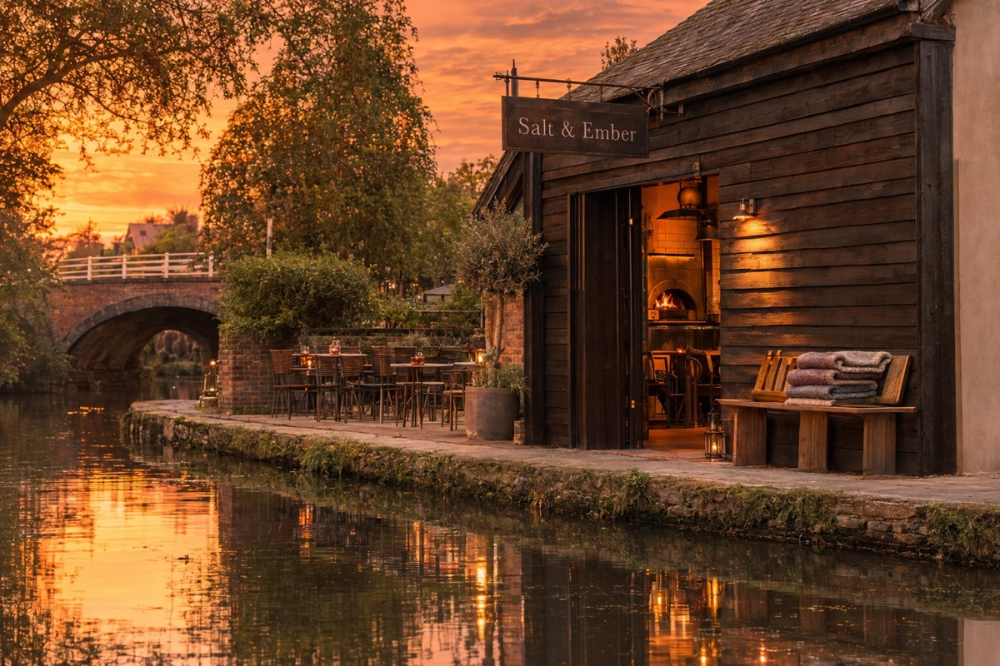

Salt & Ember

A wood-fired bistro on the canal with a counter facing the open kitchen. Coffee arrives as a pour-over or a cortado at the end of a meal, brewed from a house blend roasted nearby.

A wood-fired bistro on the canal with a counter facing the open kitchen. Coffee arrives as a pour-over or a cortado at the end of a meal, brewed from a house blend roasted nearby.